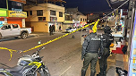

¡Ubica el riesgo y protege tu camino!
En los últimos años, la percepción de inseguridad en Ecuador ha aumentado debido al crecimiento de diversos delitos como robos, extorsiones y hechos violentos en distintas zonas del país. Esta situación afecta tanto a ciudadanos como a visitantes, quienes muchas veces no cuentan con información clara y actualizada sobre los niveles de riesgo en determinados sectores. Es momento de comenzar a informarnos sobre zonas riesgosas y salvar una vida a la vez.
Más InformaciónTasas y Estadísticas de Criminalidad en Quito en 2026
En los primeros meses de 2026, Quito muestra realidades opuestas según el delito. Mientras los robos han descendido notablemente (hasta un 25% menos en el primer trimestre), con un promedio de 3,100 casos y una reducción del 18% en robos a personas, los homicidios han aumentado peligrosamente: se registraron 67 casos solo en el primer trimestre, un 22% más que en 2025, lo que representa una tasa anual estimada de 8 por cada 100,000 habitantes, vinculados mayoritariamente a violencia criminal organizada.
Más Información
Intento de sicariato en el norte de quito
El 25 de marzo de 2026 en Carapungo, norte de Quito, un adolescente de 16 años que conducía una moto y su cómplice (con boleta de captura por asesinato en Esmeraldas) intentaron un doble sicariato contra una pareja de ciudadanos venezolanos, hiriendo a la mujer en un tobillo y al hombre en muslo y costilla. Ambos fueron detenidos por la Policía.
Más InformaciónMapa Interactivo
Investiga datos de riesgo estadísticos de diversas zonas del país con el siguiente mapa